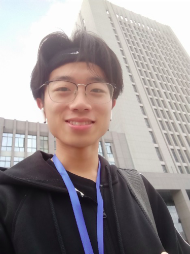

近日，有些感想，于此处记录与再思考
骑着小电动车，四十多分钟的路程，终于到了中科大，从辐射实验区进入，映入眼帘的是各种国家级实验室，建筑都没有很高，但却依然让人心怀敬意，这算是我第一次进入别人家的大学，整个人的心的变得小心谨慎起来。
进入淮北，来到淮北师范大学，回想这将近一年的学习生活，我感觉自己并没有收获自己想要的成长，并不是说这一年是荒废的，相反，我深感它的值得，遇到陶书凝，彼此有摩擦，有快乐，有共同对未来的向往，我变得更愿意去理解和体会他人，内心也变得更热爱生活，但在学习与个人发展的视角来看，我虽然看起来努力学习专业知识，常常去实验室，但想法困于大学之前的认识，对未来模糊，迷茫，也不知如何坚定.
我时常担心自己做不好，于是，在第一次504招新的时候我选择了退却，尽管感觉那是个不错的地方，自己很想去，但却找了一堆理由没去参赛。事实上，即使当时还有些腿伤，是不影响走过去参赛的，那场比赛结束后，我内心松了口气，但也惋惜和自责.
这里的环境犹如温水，我时常告诉自己不要把视角局限于学校，要把眼光放长远，可缺少实际的体验与接触，那种自我告诫只能变为有时候自谦的表达，虽然我并没因此而骄傲什么，但我的自我懈怠是确实存在的，我不知道自己想变成什么样，也不知道自己要去坚持什么。
这些问题在如今依然存在，如此的迷茫的存在从逻辑上思考来看是再正常不过的，但我要去明确在如此状况下如何对待自己。
- 不要颓废生活，平衡好学习，情感，娱乐。
- 从心理上要相信自己是个大佬，采用积极的心理策略。
- 扩充自己的眼界，比赛是方式之一，除此之外，要积极寻求于外界产生连接交互的渠道，视野不能闭塞。
我又突然感觉迷茫大可不必，没人能说未来一定怎样，不说五年，明天的你已经不是今天的你。身体在新陈代谢，想法在动态变化，突然想到动态规划思想，把视角局限于当前阶段，实现局部最优解，努力过好现在的生活，让她，也让自己开心点。
希望今日的选择能给予未来更多的选择生活的权力，而不是生活选择你。嘻嘻
:)
